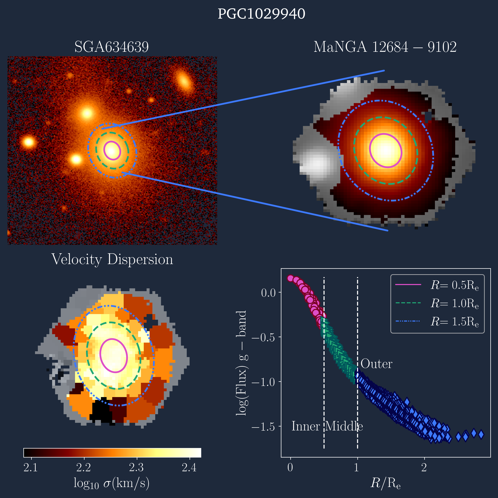
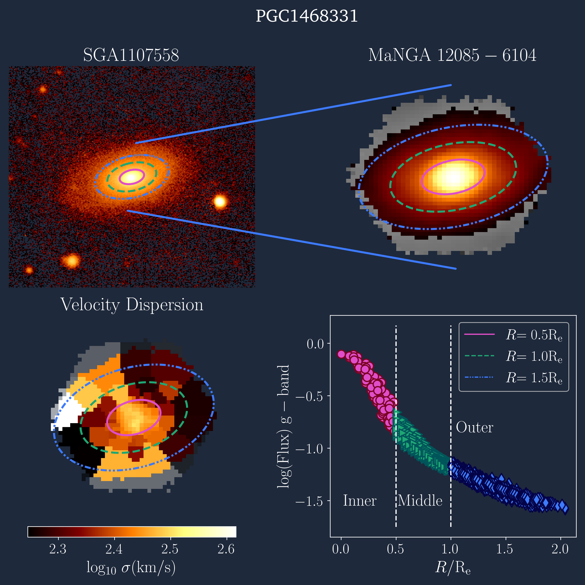
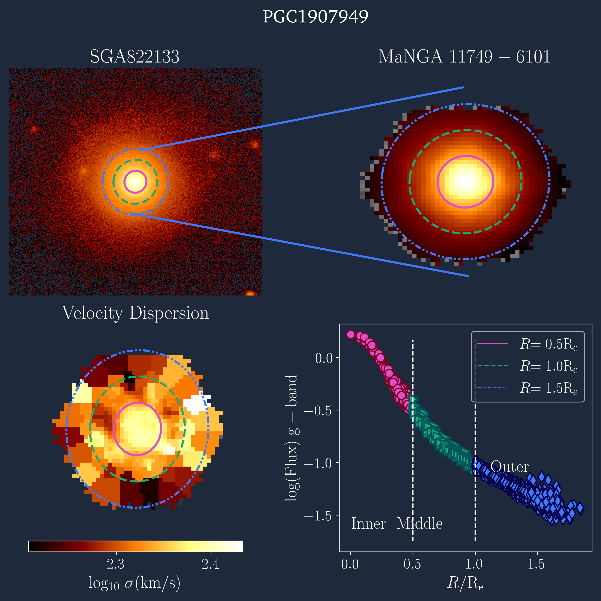
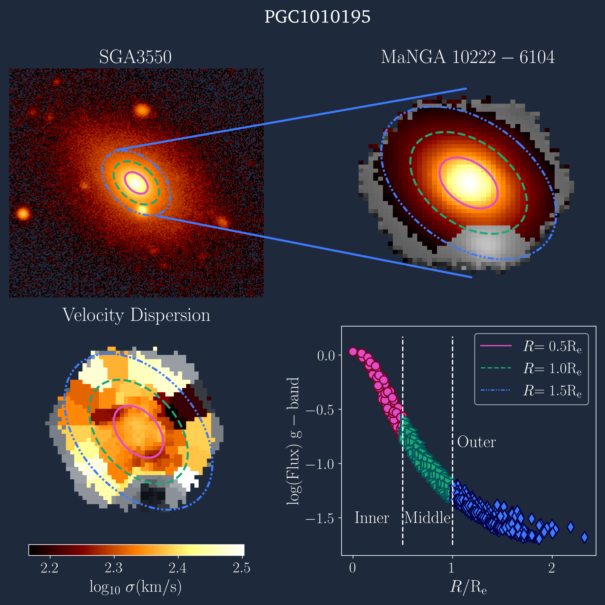
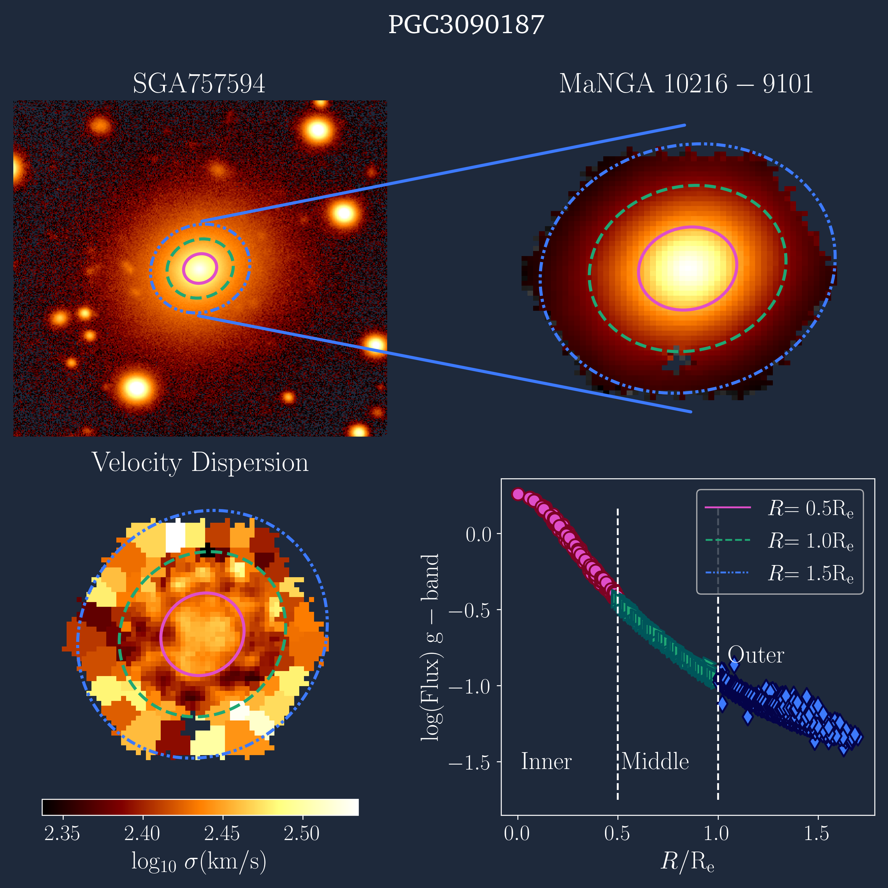
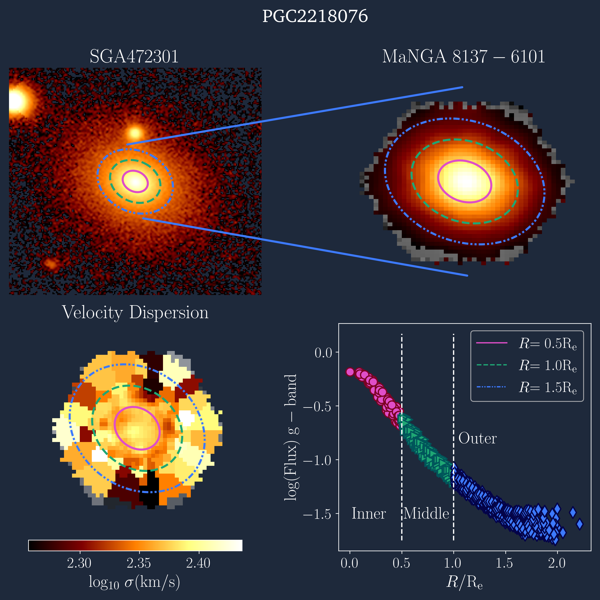

×

RA 05h 34m 32s · Dec +22° 00′ 52″ · Crab Nebula
// Astrophysicist → Data Scientist
PhD researcher specialising in observational astronomy — optical and multi-wavelength surveys, and spectral analysis. Six years reducing, modelling, and interpreting complex datasets from world-class observatories. Now bringing that rigour to data-driven industry roles.
Data Scientist | Statistical Modeling | Large-Scale Observational Data
Research highlights
Studied 726 Massive ETGs with IFU spectroscopy from MaNGA and light profiles from DESI. Applied PCA sample splitting, spectra stacking and conducted full spectrum fitting with ALF. Revealed how external and internal mechanisms affect the average stellar population.
NASA ADSApplied covariance matrix to estimate accurate measurement uncertainties in spectra. Conducted full spectrum fitting to 726 massive ETGs in three radial bins and performed Bayesian analysis to infer scaling relations (slope, intercept, intrinsic scatter) between σ and elemental abundances.
Applied Caustic Method to select true satellites of 726 massive ETGs from SDSS single-fiber spectroscopy data. Stacked spectra and measured LICK indices.
Research highlights
Research highlights






Transferable skills
Astronomy is one of the most data-intensive sciences in existence. A single observing run produces terabytes of raw pixels that must be cleaned, calibrated, modelled, and interpreted — often with no second chance to retake the data. The skills this demands map directly onto industry data roles: rigorous pipeline engineering, robust statistical inference, and clear communication of uncertain results under deadline pressure.
Get in touch